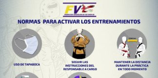
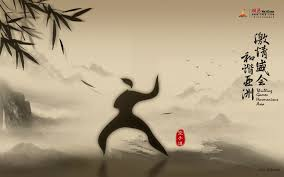

El Taekwondo es un arte marcial coreano moderno; el cual fue dado a
conocer como "Taekwon-Do" en 1955 por el general Choi. Fue convertido en
deporte olímpico de arte y combate durante los Juegos Olímpicos de Seúl
1988, donde fue presentado como deporte de exhibición, hasta su
reconocimiento deportivo olímpico en los Juegos Olímpicos de Sídney
2000.
Los beneficios de la práctica continua del Taekwondo son muy buenos y
productivos. Muchos estudios han revelado que las personas que se
ejercitan en una disciplina deportiva, a lo largo de su vida, tienen
menos riesgos de obesidad, desarrollo de enfermedades crónicas,
drogadicción, entre otras condiciones que afectan la salud física,
mental y emocional.

El retorno a la actividad deportiva en Venezuela presenta un panorama difícil producto de la actual situación sanitaria, por lo tanto hay que cumplir las reglas de distanciamiento social.

El taekwondo se caracteriza por su amplio uso de las técnicas de pierna y patadas, que son mucho más variadas y tienen mayor protagonismo que en la mayoría de las artes marciales, y deportes de combate..